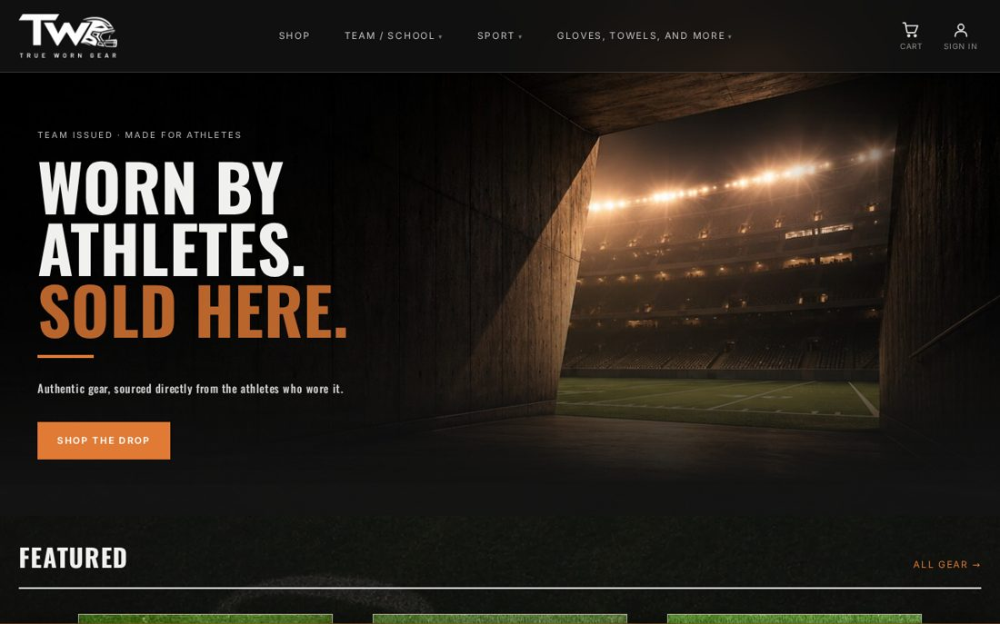

An online store for college athletic apparel. I co-own the business and I'm its only developer, so I designed and built everything: the storefront, checkout, customer accounts, and the internal tools we use to run it.
PHP 8.3 · PostgreSQL · Stripe · Google OAuth · Gmail API · nginx · Cloudflare
What I built
- A storefront written without a framework, with a small custom router and view layer. Pages are server-rendered and the storefront runs without client-side JavaScript outside of checkout.
- Catalog search with multi-select filters for sport, school, size, type, and color, backed by indexes so it stays fast as inventory grows.
- A cart that places a timed hold on single-quantity items so two shoppers can't buy the same piece, with Stripe Checkout and webhook-driven order fulfillment.
- A custom CRM for inventory, orders, customer email, returns, sales tax, and athlete commissions.
- An admin inbox built on the Gmail API, so customer support runs from the same dashboard as everything else. It syncs incrementally and sanitizes incoming HTML before rendering it.
- Server-side analytics with a checkout funnel report covering traffic sources, cart abandonment, and sales.
- 580+ automated tests, an error-monitoring dashboard, and a health check endpoint to catch regressions before each release.